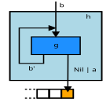
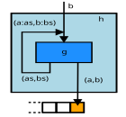

Anamorphism
Anamorphism
Anamorphism is the one of well known recursive schemes which is defined in pseudocode as:
p :: B -> Bool
g :: B -> A || B
h :: B -> A*
h b = Nil , p b
= a : h b' , ¬p b
where a, b' = g b
The scheme looks like:

p (not shown) is the predicate which "decides" what to return on current step:
Nil or to continue to recursion.
It can be easy coded in Python:
def ana(b, g, p): if p(b): return [] else: a, b_ = g(b) return a + ana(b_, g, p)
Most known example of usage is:
def myzip(l0, l1): def g(b): x, *xs = b[0] y, *ys = b[1] if not xs and ys: xs = [None] if not ys and xs: ys = [None] return ([(x, y)], (xs, ys)) def p(b): return not (b[0] or b[1]) return ana((l0, l1), g, p) print(myzip([1,2,3,4], [10,20,30])) print(list(zip([1,2,3], [10,20,30])))
A specially ZIP looks like:

what is in pseudocode:
zip :: A* || B* -> (A || B)* zip = ANA<g, p>, where: g (a:as, b:bs) = ((a,b), (as, bs)) p (as, bs) = (as=Nil) | (bs=Nil) -- until one of tails is not empty
Whether it is possible to imagine a parallel form?